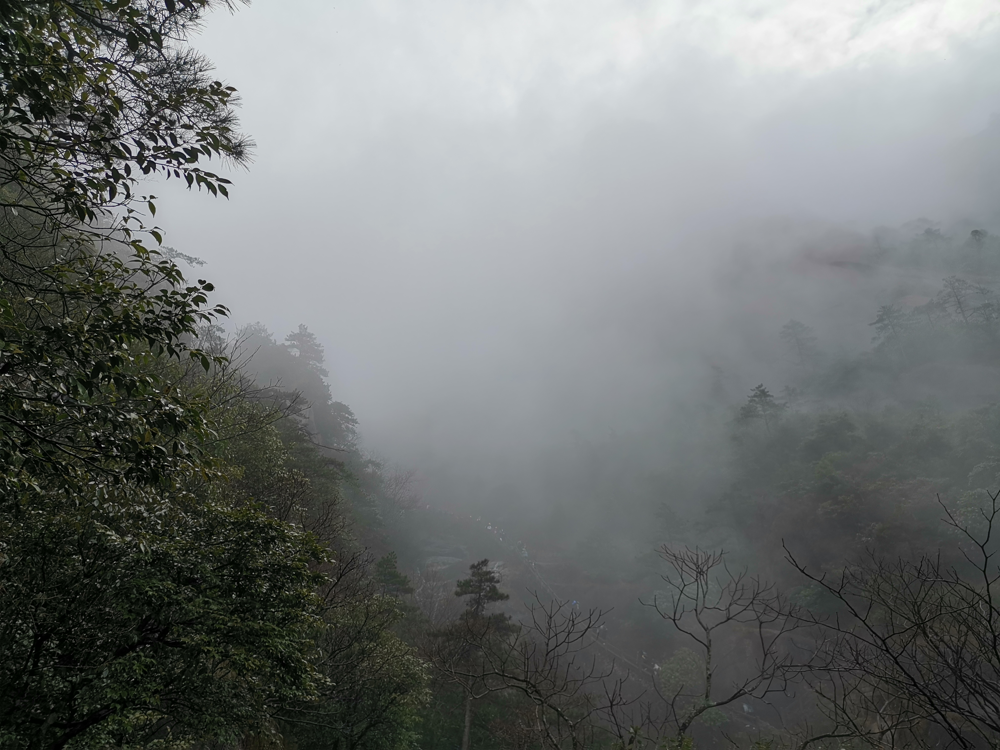
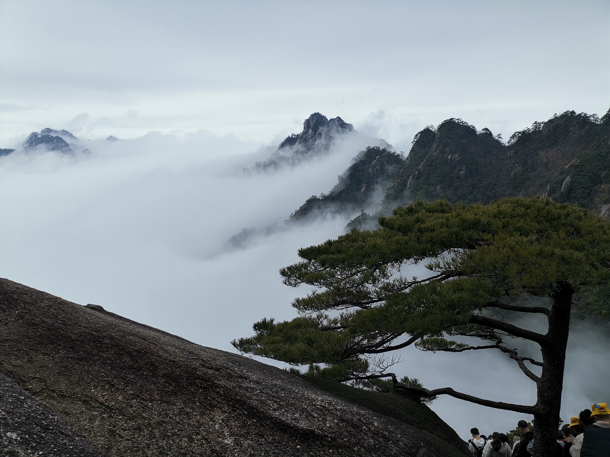

寒假还未开始，家里人就已经决定要集体出游，上次出游去的是帝都，在茫茫人海中行色匆匆地游览了一些名胜，现在想来，还是应该修完中国近现代史而后再去，了解的会多一些，收获会大一些。
加上帝都主要都是文化名胜，自然风景尚可，但不是主要，于是今年决定去看点风景，思来想去决定爬山，一开始说要去泰山，后来决定去黄山，说到底还是因为徐霞客的”五岳归来不看山，黄山归来不看岳”。
在汤口镇住了三天，第一天爬黄山，第二天游宏村，第三天在跑路之前去了屯溪老街。
都说黄山有四绝，奇松，怪石，云海，温泉，但是温泉需要一定的经济基础，穷游的我果断放弃了，而剩下的三绝倒的的确确是体会到了。
为了爬山，早上五点多就起了床，但事实证明还是不够早，听说有许多人三点就起床走了，黄山上山有两个入口，一个是前山的慈光阁，一个是后山的云谷寺，经典的线路似乎是从云谷寺上山，而后从慈光阁下山，因为前山比后山要难以攀爬，但是听到云谷寺接送车站前的大喇叭不断地喊着:”此处登山等待时间约为两个小时，建议从慈光阁上山”，就打消了随大流的念头。
后来的经历证明前山确实比后山更加陡峭，但是这个发现在我的团队里意义不大，因为在玉屏楼的时候，四个人里就有三个提出下山了，明明只走了四分之一(或许还不到)的道路。
从慈光阁到玉屏楼的路上，也是第一次见到黄山云海(或许叫云雾更合适)的时候，确实清逸缥缈，如梦似幻，比那日南京，镇江等地的大雾多了几分生气和仙气。

如果说在慈光阁到玉屏楼的路上还有什么令人难忘的景色的话，首当其冲的就是蓬莱三岛，而且到达蓬莱三岛时，太阳悬空而照，正对着游览的人群，将三岛的轮廓化作了幽深的影子。
而后的旅行，便是直上玉屏楼，玉屏楼上有整个黄山的象征与标志–迎客松，但是似乎是为了不知名的原因，迎客松下被搭起了一个丑陋的脚手架。但是玉屏楼确实是整个黄山之旅中景色最好的一处，一方面是视野开阔，另一方面是当我到达玉屏楼时仍然留有余力，并不觉得有多累。
玉屏楼之后，我便一人独行，后来路上的人逐渐变多，甚至有几次拥堵的经历，我的体力也渐渐耗尽，最后的一半左右的旅程与其说是游览，不如说是赶路，我要做的，就是完成我原定的计划，于慈光阁上山，于云谷寺下山，能够说得出名字的景色就是那块飞来石，不过飞来石旁有点奇怪，整块石头立于悬崖峭壁之上，但是只有一半的地方有护栏，另外一半没有。而且有许多好景色并没有明确的标出名字。

整个爬黄山的过程留下了两点遗憾:
一是天都峰和莲花峰全部封了，不允许攀登，我最后只是登上了鳌鱼峰，但是峰顶的景色并没有想象中的那么好。
二是没有雨雪，这点不解释。
总的来说，云海为最，奇松和怪石也见到了，但是这二者都对想象力提出了一定的要求，并没有像云海那样让我切实的感到快乐。
与黄山相比，后两日的宏村和屯溪都有些黯然失色，但是这两个景点确实值得一去，尤其是宏村。